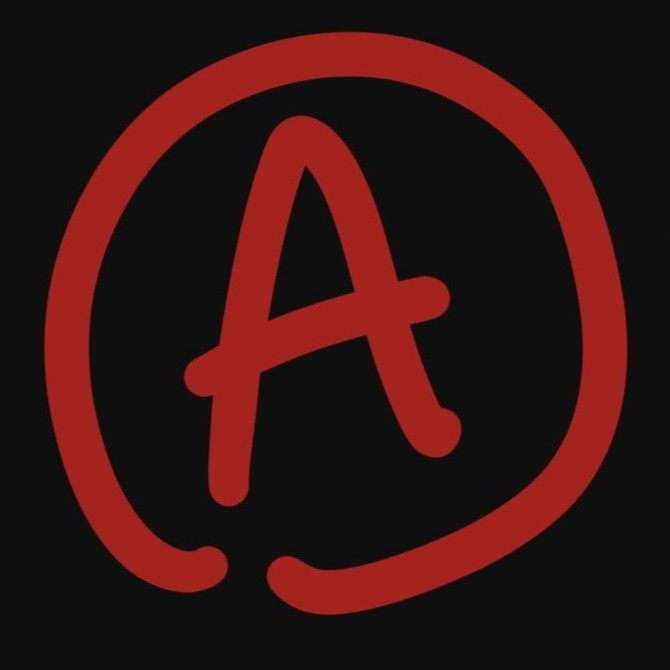

'JustATeam' is a team made from talented people all over the world. We met online when looking for people to work on the Jamsepticeye gamejam. This opportunity brought both talented Artists and developers together in what is now 'JustATeam'. We liked working together so much we decided to start making an indie horror game called Rustbucket. The game is in full development and will hopefully release at the end of this year.
Our Instagram Account!!A walking sim and rhythm game with a dark tone. Based on a real story of loss. Play as Lili — a mother, composer, and wife — as she pieces together the truth and faces an impossible choice.
We made Cadenza for the Jamsepticeye Halloween gamejam. Hosted by Jacksepticeye and DuckyDev. And we made the game in about 4 days.
Gamejam Link ▸WASD to move. ZXC for rhythm minigames. Click to continue dialogue. Walk through the house and find what matters most.
I was one of the programmers of this game. Mainly focussing on the rythm aspect of the game.
◂ Back Play on itch.io ▸---------------------------------------------------------------------------------
---------------------------------------------------------------------------------
---------------------------------------------------------------------------------